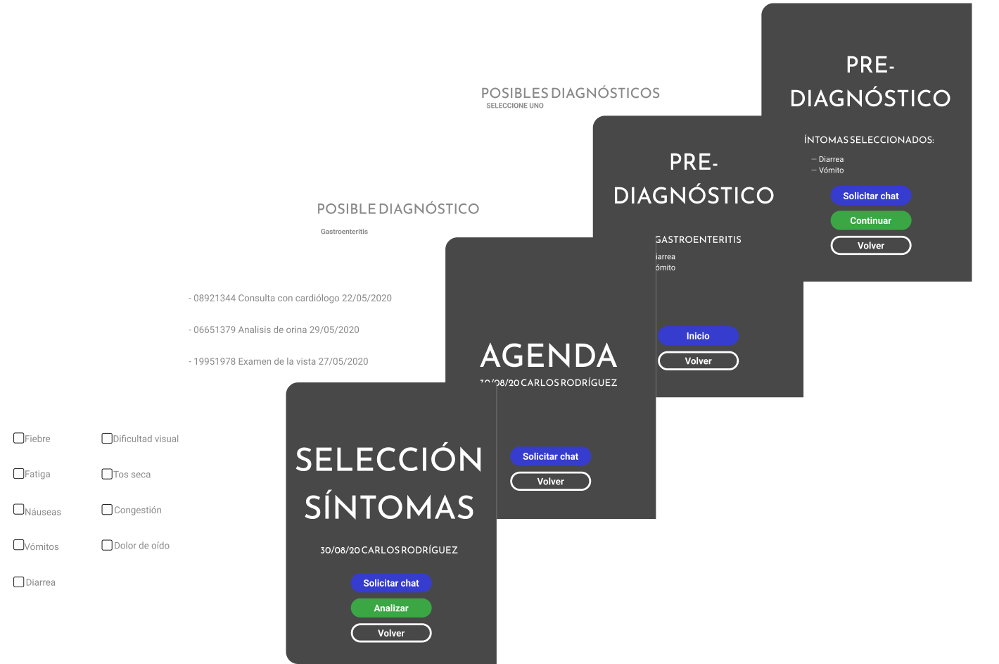

Sistema de Teleconsulta Médica

STM es nuestro último proyecto elaborado hasta la fecha.
Frente a la actual emergencia sanitaria, en BIT optamos por desarollar este sistema donde los usuarios pueden consultar por medio de un sofisticado chat garantizando el cumplimiento de los protocolos sanitarios.
Tanto diagnósticos como recetas y pases pueden ser ingresados por los médicos. Los pacientes pueden realizar un chequeo para obtener un diagnóstico preliminar que lo determina el sistema.
Desarrollamos una interfaz intuitiva para que usuarios de todas las edades se sientan cómodos con su uso.
Tutoriales